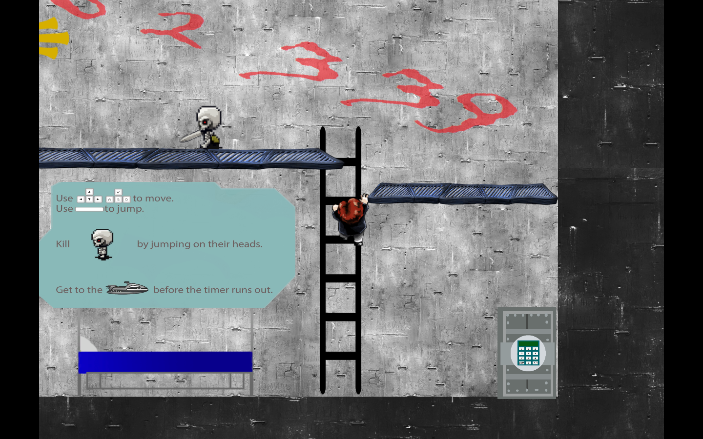
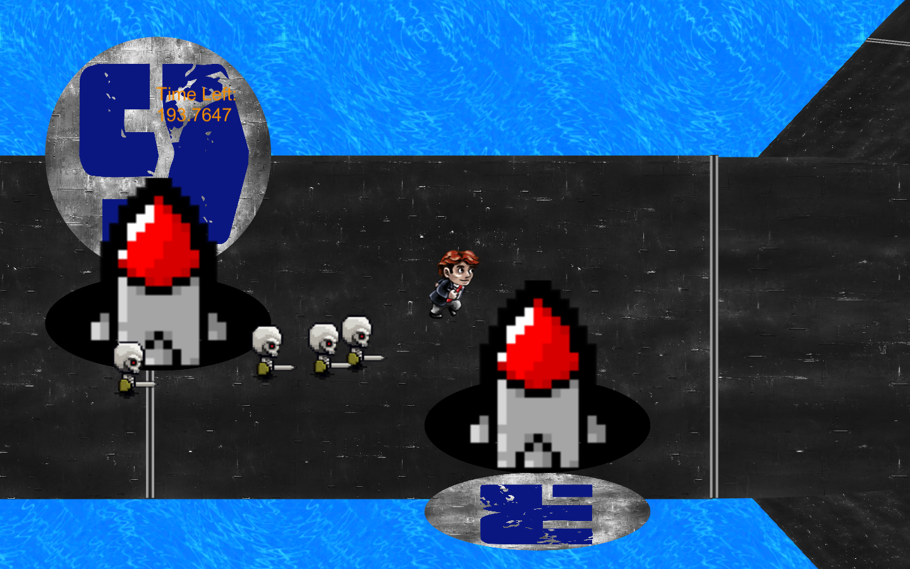
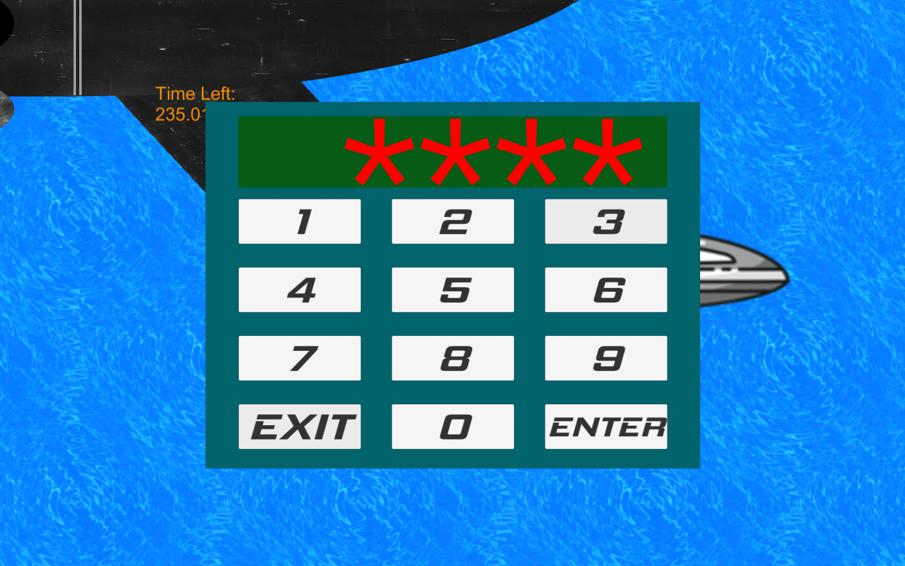
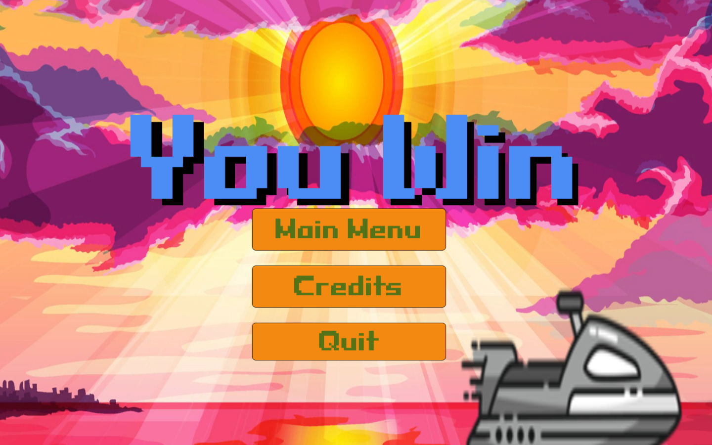

Submarine Escape, or Sub Escape for short, is a Unity project created by a group of three programmers, including myself. My largest contribution to the project was creating the AI of the enemies. I also assisted in the creation of the final level.